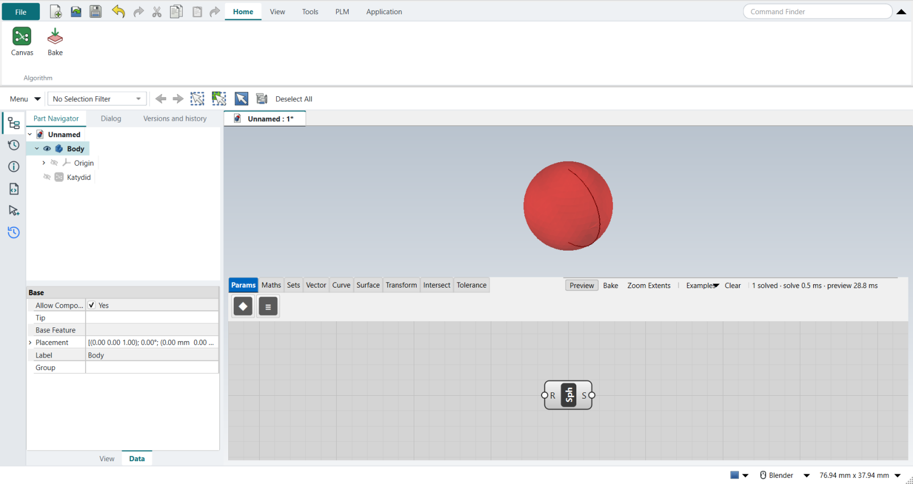
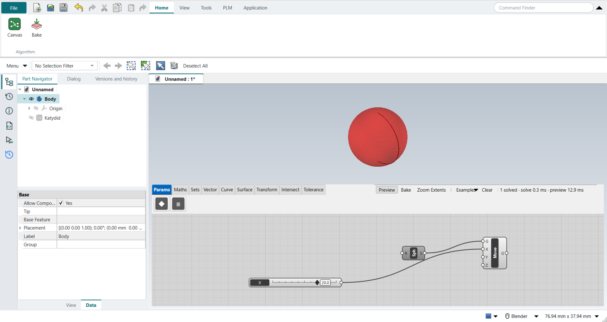
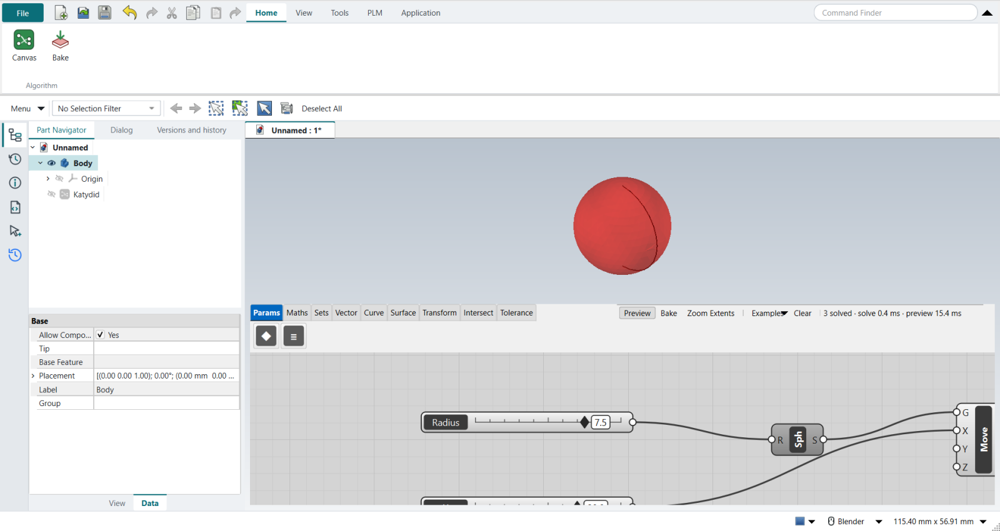
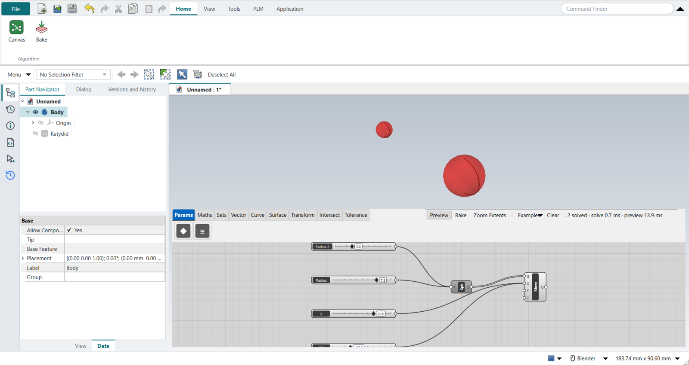
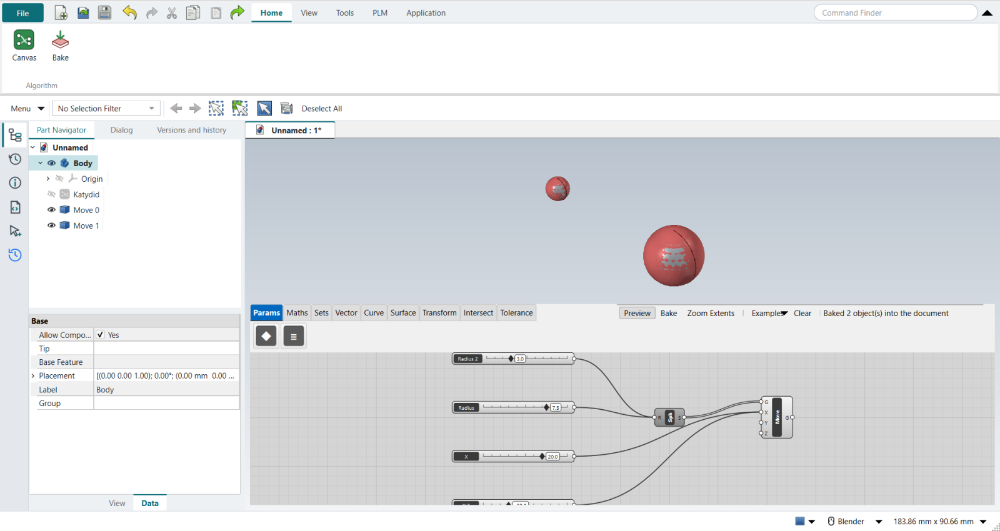
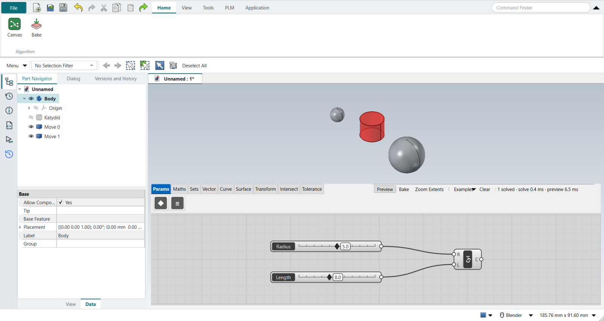

Tutorial O: Grasshopper basics, sphere and cylinder
| Video |
Bastian Wibranek, Rhino 3D and Grasshopper - Basics Tutorial (YouTube) |
| Application |
Algorithmic Modeling (Katydid) |
| You learn |
Opening the canvas, adding components by name, sliders, wiring, two results from two inputs, Bake, warnings, saving |
| Sizes |
Millimetres: a sphere of radius 7.5 and one of 3, 40 mm apart; a cylinder 5 × 8 |
The video teaches Grasshopper inside Rhino. Here the same steps run on Katydid’s canvas inside FreeCAD NX-Style: Katydid plays Grasshopper’s part, FreeCAD plays Rhino’s.
Step by step
1. Open the canvas
Application › Algorithmic Modeling. The canvas opens as a floating window over the graphics window, as Grasshopper’s floats over Rhino’s viewports.
Grasshopper’s Display › Draw Full Names has no counterpart: Katydid writes each component’s short name on it and shows the full name, every input and its type in the tooltip.
2. A sphere
Double-click the empty canvas, type Sphere and press Enter.
A red preview sphere appears at the origin in the graphics window: the preview is not a document object yet.

| Grasshopper’s Sphere also has a Base (B) input for its position; Katydid’s Sphere sits at the origin, so the next step moves it. |
3. Move it
In the video a point drawn in Rhino is referenced into the sphere’s Base (Set one Point) and dragged with the Gumball. Katydid cannot reference a FreeCAD point yet, so a Move after the sphere does the moving:
-
Double-click,
Move, Enter. -
Drag a wire from the sphere’s output S to Move’s G.
-
Double-click,
Number Slider, Enter. Double-click the slider to name itXand give it the range −50 to 50, value 20. -
Wire the slider into Move’s X.
-
Right-click the sphere and switch its preview off, so only the moved sphere shows.
Drag the slider and the sphere follows, live.

4. A slider for the radius
Add a second Number Slider, name it Radius, range 0 to 10, and wire it into the sphere’s R.
At 7.5 the sphere’s volume is 1767.1 mm³, as 4/3 π r³ gives.

5. Two spheres
The video references two points (Set Multiple Points) and copies the radius slider. Here a second X slider (−20) goes into Move’s X and a second radius slider (3) into the sphere’s R, each wire dragged with Shift held so it is added, not swapped. Lists pair up item by item: radius 7.5 at x = 20 and radius 3 at x = −20.

6. Bake
Home › Algorithm › Bake (or Bake on the canvas) turns what is previewed into ordinary Part features.
Move 0 and Move 1 appear in the Part Navigator and stay when the canvas is closed.

7. Exercise: a cylinder
Clear the canvas, add a Cylinder and two sliders, Radius 5 and Length 8, and wire them into R and L.
Its volume is 628.3 mm³ (π r² h).
The baked spheres stay in the document, grey; the cylinder is still a red preview.

In Grasshopper, typing 5 into the search box makes a slider at 5. Katydid’s search finds components only, so the slider is added and then set.
|
The replay
Every step above is done by the tutorial replay (--tutorials O): it double-clicks the canvas and types each name, drags each wire between grips, types the slider values into the slider’s dialog, and checks every result by its volume and position.
| # | In the book (NX) | In FreeCAD NX-Style | Result | Notes |
|---|---|---|---|---|
O1 |
Open Grasshopper from Rhino’s toolbar; the canvas floats beside the viewports |
ribbon 'Application › Design > Algorithmic Modeling' |
same |
Katydid’s canvas opens as a floating window over the graphics window (floating True); the document is Unnamed |
O2 |
Display > Draw Full Names, so components show 'Sphere', 'Radius' … |
- |
differs |
Katydid draws each component’s short name on it (Sph, Cyl …) and shows the full name, every input’s name and its type in the tooltip; there is no names/icons switch. Tabs ['Params', 'Maths', 'Sets', 'Vector', 'Curve', 'Surface', 'Transform', 'Intersect', 'Tolerance'] |
O3 |
Double-click the canvas, type Sphere, Enter: a preview sphere at the origin |
double-click + 'Sphere' + Enter |
same |
sphere volume 523.6 mm^3 = R 5 (Katydid’s default; Grasshopper’s is 1); inputs ['R (Radius)']. Grasshopper’s Sphere also has a Base plane (B) input; Katydid’s sits at the origin |
O4 |
Reference a Rhino point (Point > Set one Point) into the sphere’s Base; drag it with the Gumball |
stand-in: 'Move' after the sphere, a slider 'X' into its X; the sphere’s own preview off |
missing |
sphere centre x = 20.0. Katydid has no Point parameter that follows a FreeCAD point yet (asked for); dragging the slider moves the sphere live, as the Gumball does in Rhino |
O5 |
Number Slider into the sphere’s Radius ®; double-click the slider’s name for its range: 0 to 10 |
double-click + 'Number Slider'; double-click the slider: Name, Minimum 0, Maximum 10, Value; MB1 drag from the slider to R |
same |
radius 7.5 → volume 1767.1 mm^3 (expected 1767.1) |
O6 |
Two points (Set Multiple Points) give two spheres; copy the slider and Shift-wire both into R |
stand-in: a second X slider Shift-wired into Move’s X; a second radius slider Shift-wired into R |
differs |
spheres (centre x, radius): [(-20.0, 3.0), (20.0, 7.5)]. Shift + MB1 drag adds a wire, as in Grasshopper; lists pair up item by item |
O7 |
Right-click the sphere’s output > Bake…: real Rhino objects |
ribbon 'Home › Algorithm > Bake' (Katydid’s own Bake on the canvas does the same) |
same |
baked ['Move 0', 'Move 1'], volumes [113.1, 1767.1] mm^3; they are ordinary Part features in the Part Navigator and stay when the canvas closes. Baked 2 object(s) into the document |
O8 |
Exercise: Cylinder with sliders 5 for the radius and 8 for the length |
double-click + 'Cylinder'; two sliders typed 5 and 8; wired to R and L |
same |
volume 628.3 mm^3 (expected 628.3). Grasshopper makes a slider when you type '5' into the search box; Katydid’s search finds components only (asked for) |
O9 |
An orange component: an input is missing; its balloon says why |
a 'Move' with nothing in G |
same |
state warning: ['Input parameter G failed to collect data']; Katydid colours it orange and shows the message in the tooltip (hover the component) |
O10 |
Save the Rhino model (.3dm) and the Grasshopper definition (.gh), and open both together |
one save (Save As, named by the replay): the canvas is saved inside the part |
differs |
Katydid_Basics.FCStd holds the parts and the canvas (a Katydid object in the Part Navigator); there is no separate definition file to keep next to it |
| Result | Means |
|---|---|
same |
The book’s NX steps work as written. |
differs |
It works, but the FreeCAD way is different; the notes say how. |
limit |
The book’s way fails in FreeCAD itself; a workaround follows in the next steps. |
missing |
FreeCAD has no such function; a stand-in follows. |
skipped |
Not replayed; the notes give the reason. |
FAILED |
Did not work. |